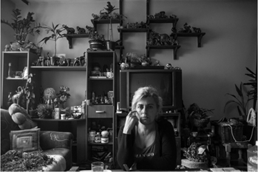
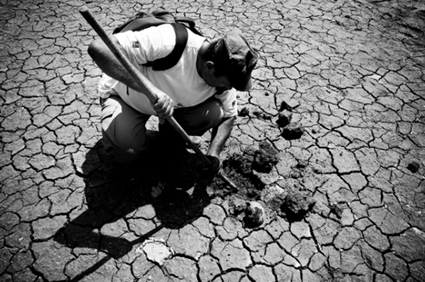
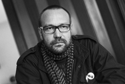

Perucac and Hasijina Prica
by Velija Hasanbegovic
October 8th - December 1st
For information, please contact: The Wild Project 212.228.1195 • info@thewildproject.com
Hasijina Prica (Hasija's Story)
Hasija is a woman who was repeatedly raped while in a concentration camp during the Bosnian War. These photos are a glimpse into her everyday life twenty years later (2013). She collects elephant figurines, dolls, etc.

Perucac
This is the name of a lake in Bosnia where a mass killing of civilians took place as part of the Bosnian War and Genocide. The photos show the exhumation of the mass grave years afterward, which was only possible after the water level got very low. Volunteers from all over Europe came to help with the digging. At this place of mass killing, Velija himself had escaped execution during the War.

Velija Hasanbegovic
Velija was born on January 1, 1976 in the Bosnian town of Foca. He grew up in Višegrad, Eastern Bosnia, where he lived until the start of the Bosnian War in 1992. During the war, he escaped a mass killing by jumping into the river and swimming to safety on the other side.
Today Velija lives in Sarajevo. He has worked as a graphic designer at Supermarket Marketing Agency in Sarajevo since 2006. Photography is his artistic expression, his favorite medium, and his escape from reality, but it is also a part of his family heritage. His exhibition “Perucac” was created in Višegrad at the same location where he escaped execution.
For “Perucac”, Velija received ULUPUBIH’s Best Photo Award in 2012. The exhibition was shown in Budapest in 2011 and published in The Financial Times. Velija’s photography has been published in a variety of reputable magazines in Europe including Theater der Zeit and Süddeutsche Zeitung. He has worked as an official photographer for the International Theatre Festival MESS in Sarajevo, Radiosarajevo.ba Portal, and Sarajevo War Theater SARTR.
|